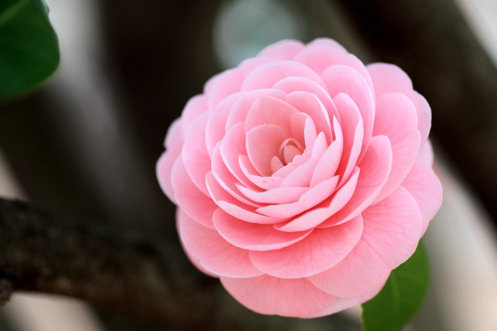
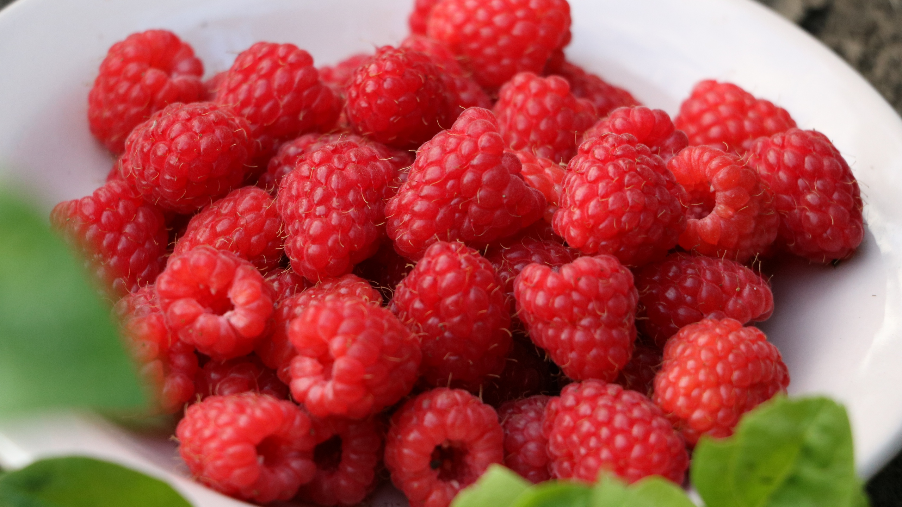
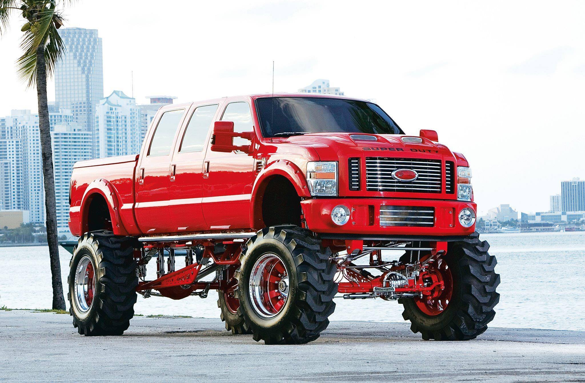
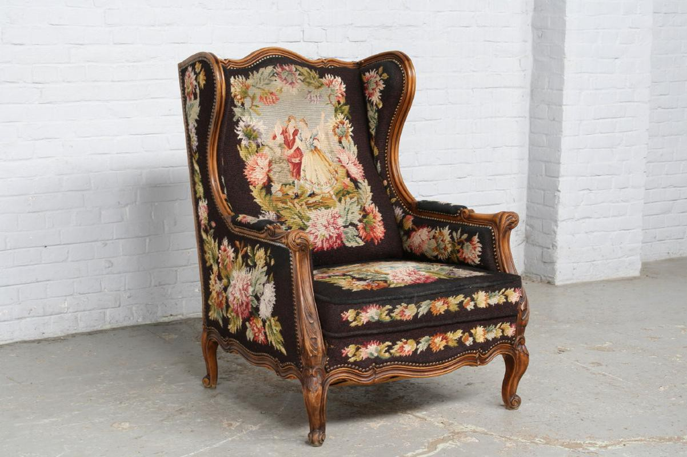
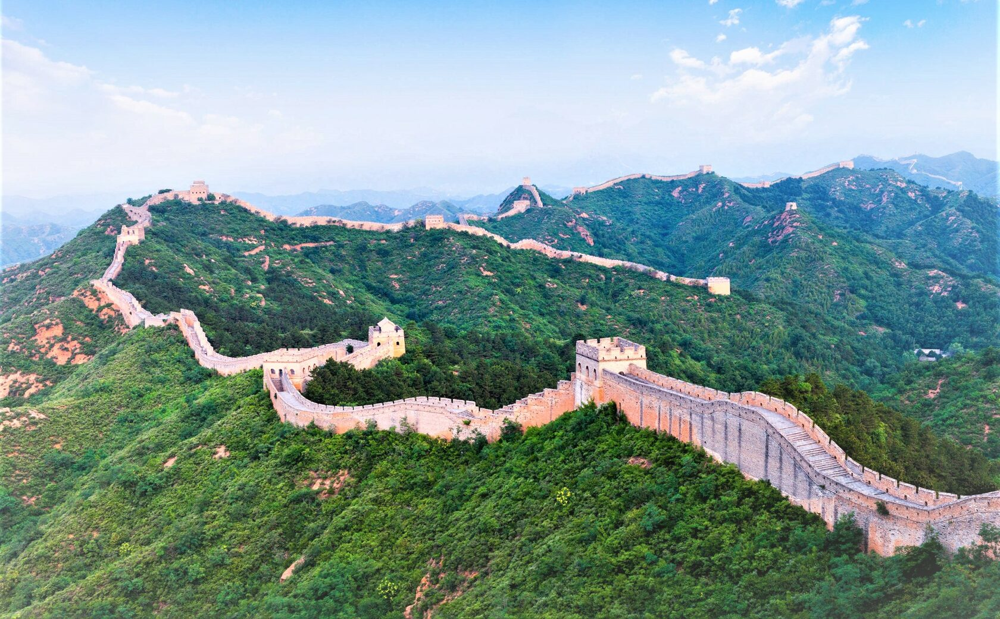

Каме́лия (лат. Camellia) — вечнозелёное растение семейства Чайные (Theaceae). Наиболее известный вид — Camellia sinensis (Камелия китайская, или Чай, или Чайный куст), из листьев которого получают сырьё для приготовления чая. Многие виды камелии используются в декоративном садоводстве. Камелиями украшала себя Маргарита Готье, героиня романа Александра Дюма-сына «Дама с камелиями».

Мали́на обыкнове́нная (лат. Rúbus idáeus) — полукустарник; вид рода Рубус семейства Розовые (Rosaceae). Растёт по вырубкам, лесам, кустарникам, берегам рек. Часто разводится в садах.

Ford F-650 изначально проектировался как рабочий инструмент. Некое промежуточное звено, между легковым пикапом и полноценным грузовиком. Но люди обратили на него внимание за внушающие размеры и неординарный внешний вид на дороге. Именно поэтому он стал пользоваться спросом, как повседневный автомобиль. Еще бы, ведь обувают этого гиганта в резину для грузовиков – R22,5. Всё потому, что максимальная масса супер-пикапа, в загруженном состоянии, достигает 12 тонн.

Стиль Людовика XV (фр. Le style Louis XV) — стиль французского рококо, который в большей степени относится к декоративно-прикладному искусству и, в меньшей степени, к архитектуре вследствие атектоничности его формальных элементов и эстетической ограниченности тем, сюжетов и мотивов, связанных, в основном, с куртуазным искусством живописи, рисунка, гравюры, костюма, мебели, тканей и ювелирных изделий. Поэтому в отличие от общего понятия «рококо» наименованием «стиль Людовика XV» чаще обозначают круг тем, художников и их произведений, непосредственно связанных с жизнью королевского двора. В свою очередь стиль рококо, зародившийся во Франции при дворе короля Людовика, со временем преодолел территориальные и хронологические границы, получив развитие в Пруссии, Саксонии, Чехии и в России (елизаветинское рококо), в отдельных случаях, прежде всего во французской провинции, просуществовал до конца XVIII века, а позднее, возрождался в формах неорококо в XIX и даже в начале XX века.

Вели́кая Кита́йская стена́ (кит. трад. 長城, упр. 长城, пиньинь Chángchéng, буквально: «Длинная стена» или кит. трад. 萬里長城, упр. 万里长城, пиньинь Wànlǐ Chángchéng, буквально: «Стена длиной в 10 000 ли») — разделительная стена длиной почти 9000 км (полная длина — 21,2 тыс. км), построенная в древнем Китае и являющаяся крупнейшим памятником архитектуры. В китайском языке слово, обозначающее сам проект (长城, Chángchéng), приобрело также образное значение «несгибаемая могущественная сила, непреодолимый барьер». Великая Китайская стена упоминается в Государственном гимне КНР.